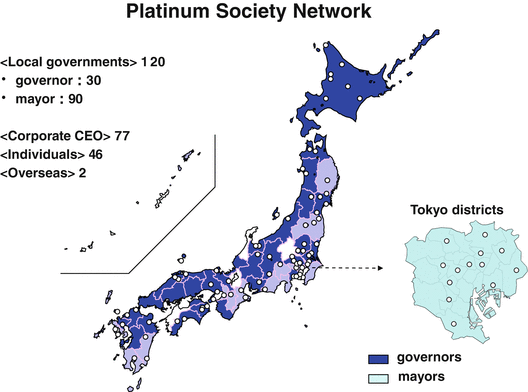
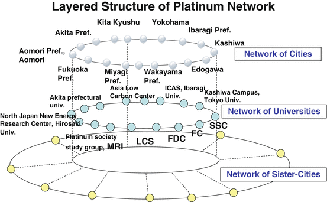

In the preceding chapters, I have discussed problems arising from new paradigms of the twenty-first century—“exploding knowledge,” “limited Earth,” and “aging society
”—and how to cope with them. Japan is, a problem-saddled advanced country, already faced with a wide range of problems arising in connection with these paradigms. Japan is in the vanguard of what other advanced industrialized countries can soon expect to face.
Japan has already begun to struggle with these issues including a declining population, a rapidly aging society
, deteriorating urban infrastructures, local cities losing dynamism, dilapidated farmlands, expanding budget deficits, and growing global environment problems. To simultaneously solve these problems, we must establish a vision for a new nation that can meet the challenges of the twenty-first century. It is a nation that will replace the preceding visions of the administration of Prime Minister Hayato Ikeda
(1960–1964) in its income-doubling plan and the administration of Prime Minister Kakuei Tanaka
(1972–1974) in its plan for remodeling the Japanese Archipelago. This vision should be the “Platinum Society
Plan
” as presented in this chapter.
Shooting Through the “Clouds Above the Hill”
Our new vision must be based on the acknowledgement that the age of the “Clouds above the Hill” is now over.
The era known in Japanese history as the Meiji Period from the mid-nineteenth century to the beginning of the twentieth century was the period in which the leaders of Japan, who would succeed in making Japan a full-fledged modern state after the Meiji Restoration, in order to secure the security and independence of the nation and its people, chose the route of imitating the U.S. and European nations in their civilization and enlightenment, wealth-creating industry promotion, national prosperity and military strength, and quickly rearranged the Tokugawa Shogunate into a Western-style constitutional state. “Clouds above the Hill” is the historical novel sketching the coming of age of a group of young men who bore the burdens of modernizing Japan in that period. The novel is centered on the brothers Yoshifuru and Saneyuki Akiyama, two of the military men who led Japan to victory in the Russo-Japanese War, the moment when a small nation of the Far East leapt in one bound to the status of a world power, and on the haiku poet Shiki Masaoka, who left an indelible mark on Japan’s literary world. It is a work that focuses on how these and other diverse characters who lived in the Meiji Period and contributed to Japan’s modernization supported the nation’s leaders with an earnest spirit, and also how they thought and acted as individuals. For this reason, it is not only highly regarded as a historical novel, but it has also won many fans in Japan among executives and businessmen, who feel a sense of kinship with the way the novel’s characters lived their own lives.
Regarding the title of his book, the author Ryotaro Shiba wrote the following in the Afterword: “This long tale is the story of happy optimists unparalleled in Japanese history. By and by, they completely lose themselves in the extraordinary undertaking of the Russo-Japanese War… These optimists, with the characteristics of the men of that era, move forward with their eyes fixed solely on what lies ahead. If perchance one wisp of white cloud were hanging in the blue sky above the slope they are climbing, then surely they would gaze only at it as they made their way up.”
Indeed, that very wisp of cloud is the image of Japan as a modernized country sought after by that group of young men coming into their own in the Meiji Period.
Looking back at the history of Japan, Japan appears to have been maintaining great military strength even on a global basis at the time when Toyotomi Hideyoshi
dispatched troops to Korea in the sixteenth century to fight with the Korean kingdom and its major supporter, Ming China. Its military strength was evidenced by its persistent belligerence against Ming China. For good or ill, the results of war substantially depend on the industrial technology and the economic strength of the country. In the period of Hideyoshi, Japan was among the world leaders in gun and shipbuilding technologies.
Early in the seventeenth century, after unifying the country and starting the Edo period
, Tokugawa Ieyasu
closed its doors to foreign countries to check the entry and spread of Christianity. The national isolation resulted in the emergence of such first-rate intellectuals as Matsuo Basho
and Kobayashi Issa
and the development and prosperity of culture, including ukiyoe (colored woodblock printing), the tea ceremony, and wasan (Japanese mathematics).
With respect to social systems, the express messenger system was developed nationwide. In education, various types of systems were instituted, ranging from temple schools1 to higher educational institutions managed by the feudal domains. Other systems were also introduced to simultaneously enhance productive capacity in the primary industries and to preserve the environment, including paddy fields, a public water system, a common land system, forest development, plantations, and a forestry and flood control system. It is true that the seclusion policy during the Edo period produced benefits, such as the development of domestic cultures and social systems.
On the negative side of the seclusion policy, it left Japan out of international competition in industrial technology. Japan realized for the first time how it had been lagging in industrial technology for 250 years when the Black Ships arrived at Uraga in 1853, carrying cannons, near the end of the Edo period.
Upon the arrival of the Black Ships and amid demands of the United States and other foreign countries to open the country up to the world, the Tokugawa regime was overthrown and the Meiji government rose on the ruins. Then Japan started a desperate effort to catch up with Europe and America in the new period.
Japan is really a strange country. It was understandable that once the decision-making body of the nation had changed hands, the national system would undergo substantial change. Still it was interesting that the new regime abolished almost all systems firmly established before and during the Edo period and replaced them with Western counterparts.
The parliamentary system was introduced from Britain. For the security and law enforcement system, Japan adopted the French police system to replace its conventional enforcement system composed of such duties as yoriki, doshin, and okappiki.2 The university system was modeled on the German system. After a visit to Britain, Maejima Hisoka introduced the British postal system although the express messenger system had long been established in Japan. Thus Japan replaced nearly all social systems during the Meiji period
.
Pursuing a policy of encouraging new industries, the Meiji government introduced from Western countries technologies necessary to modernize or develop the fiber industry, the fertilizer industry, and the steel industry, as well as the medical system, during the age of the “Clouds Over the Hill” as portrayed by novelist Ryotaro Shiba (Shiba 1979). The clouds over the hill represented Western societies and Western industries. During the Meiji period
, Japan sought to reach the clouds.
In those days, Japan pursued the growth model of a developing country, under which the national government took the initiative in introducing industrial technologies and encouraged new industries, thereby increasing GDP and improving people’s living standards. Over the hill were the clouds they must aim for—the models of advanced countries that had to be introduced.
Decades later, Japan was defeated in World War II. The people had almost nothing when they restarted. And again they worked hard to reach “the clouds above the hill” (Dower 1999). Toward the end of the 1960s, Japan became the world’s second largest economy in GDP. The “clouds over the hill” should have disappeared at that point. Then Japan should have shifted from the growth model of a developing country to that of an advanced country. Nevertheless, the country failed to make the shift. That failure still lies behind today’s problems.
When Japan was a developing country, the central government took the initiative in developing industries, which resulted in improved living standards of the people. Now Japan is one of the most advanced economies in the world, and the Japanese society is fully matured. Japan is now a “problem-saddled advanced country.” We still do not see what Japan should become in the future nor which industries might help revitalize the economy and best position the country for a promising future. Today, advanced countries like Japan must proceed and plan for the future without a model example.
We have no other choice than to clarify the issues, establish goals to solve them, and build an advanced society worthy of being called a role model for the world. This should be the right way for Japan to reconstruct itself. I believe that Japan has sufficient cutting-edge technology and cultural imagination to enable it to achieve its goals. New demand and a new economy will be created through seeking solutions to the complex problems that all advanced nations face in the twenty-first century. In this context, I believe Japan’s regeneration will be a new model for solving global issues, one that can serve as a universal ideal for the world.
Pursuing the “Platinum Society ” Through Three Innovations
You do not need to take “universal ideals” too seriously. Paradoxically, you may start with what you have on your plate. The growth model for advanced countries is designed to improve day-to-day lives. Looking back at history, advanced countries worked hard to solve their own problems. They left their mark on history when their activities were accepted widely by the world.
Looking at the present status of Japan, we should stubbornly endeavor to solve our own problems. When we mention this in relation to the demands as discussed so far, we should not only rely on “diffusive demand
” but also generate “creative demand
.”
To generate creative demand
, I propose the idea of the “Platinum Society
,” which pursues the construction of a comfortable life in each region. The word “platinum” implies an exceptionally high-quality comfortable society realized by organic combination of three innovations: “green innovation,” pursuing an ecological low-carbon society; “silver innovation,” intending to achieve a dynamic aging society
in which all people participate; and “golden innovation,” designed to build a society where people keep developing themselves by effectively using IT.
The Platinum Society
aims to improve the lives of people through innovation, not at the initiative of the government. The environment for green innovation varies from region to region. It is different, for example, between Hokkaido and Okinawa. Thus, it is impossible for the government to take across-the-board uniform measures. It is the citizens who should take the initiative in each local community.
The purpose of the Platinum Society
Plan
is to improve the lives of citizens at their initiative through coordination with industry, government, and academia. However, their activities would not bear fruit if they are carried out separately in individual regions, because the amount of data and information owned by each region is so limited that sufficient demand would not be generated to create new industries or raise a voice strong enough to reform the legal and social systems.
Then, what is important is a network of regions facing common issues. Such a network would facilitate the solution of these issues through exchange of information and ideas. The accumulated efforts of all regions to improve daily lives would stimulate enormous demand to develop new industries. The Platinum Society Network
was established for this purpose in 2010. In part, this network vision evolved from the tenets of sustainability science as noted in Chap. 2 and was developed in collaboration with scientists and multiple stakeholders in communities, business and government with a view to developing new integrated knowledge that is aimed at action. However, to ensure that knowledge for action does affect decision-making and lead to sustainable development, it must be linked to the simultaneous development of new business models.
The goal we seek is a comfortable society in which all people, including senior citizens, can participate and develop themselves throughout their lives. It is a society in which employment is guaranteed to all workers through “green innovation,” “silver innovation,” and “golden innovation.” The Platinum Society Network
is a national movement to encourage such a society and village revitalization. In this chapter, we explore the structure of this network, examples of progress that are already underway to achieve the goal of this network, and mean to promote it throughout Japan.
In reforming society, it is rare that the whole society starts acting simultaneously with a word from one person. Usually, a leader steps forward toward the frontline first. Then, companions gradually join the frontline in larger numbers. Once their activities reach critical mass, the whole society starts moving. This is the process which we should seek to promote the Platinum Society. Japan consists of 47 prefectures, which include about 1,750 local governments. What is important is that one or two local governments in each prefecture start moving.
As mentioned in Chap. 2, we have yet to acquire the wisdom to effectively control the networks amid the twenty-first century knowledge explosion. For this reason, many networks are unable to carry out activities appropriate to their ultimate-goals and commensurate with their abundant resources. As noted in Chap. 2, the emerging sustainability science can help to overcome this weakness by developing means for integrating large quantities of complex knowledge, developing new knowledge that is aimed at solving specific problems, and framing such knowledge in a way that it can be applied to action. To operate effectively, networks must meet certain requirements, including the structuring of objectives and activities, the sharing of structured knowledge, the presence of a network of people who share structured knowledge, and the presence of people who are committed to ensuring that the network will function as it is intended (Fig. 6.1).

Fig. 6.1
Platinum Society Network
The Platinum Society Network
seeks to meet these requirements through such activities as the Platinum Vision Working Group, the Platinum Vision Handbook
, and the Platinum Vision School, described below
.
Those who “have firmly resolved” to undertake activities that are necessary to meet the “platinum vision” should be invited to become members of the network. Indeed, there are encouraging signs in Japan today that the movement we hope to create through the Platinum Society Network is already underway. As of July 2013, 120 local governments were registered as members and a number of local governments have begun moving in the desired sustainable direction. We consider some of those examples in the following section.
Local Governments Have Begun Moving
The Japanese archipelago stretches in a north to south direction, with mountain ranges running along the center. This geographical feature causes diversity in climate, culture, and lifestyle. Just as the landscape of Japan is characterized by diversity, so are the problems the country faces today. Such terms as “global warming,” “renewable energy,” and “aging population” mean different things in different regions. One model of a sustainable city will therefore not be suitable for each and every region. Each region must foster and develop communities that are appropriate to that region. Different regions may carry out completely different activities. Some regions may install a smart grid as part of its green innovation, while others may build an information system, including an on-demand transport system and a medical care system. Nevertheless, these regions share the objective of building a network of towns that interact, stimulate one another, share knowledge, and evolve in a synergistic manner.
Consider, for example, an on-demand transport system as one way to deal with an aging society
. Today, many local transport services are on the verge of financial crisis due to an increasing number of automobiles and depopulation. Once local public transport has disappeared, senior citizens can find no other means of transport and are likely to lose many points of contact with society. This, in turn, can easily lead to their loss of the five conditions for “happy aging
,” leading to greater social burdens such as an increased need for nursing care. In order for society to promote the five conditions for “happy aging
,” and thus avoid increasing social burdens, it is indispensable they tap in to and apply the best science and technology available. This again suggests the need for the networks among academia, communities and the public and private sectors at all levels in developing means to address and solve the problems we face today. Solving the problem of transportation for an aging population provides insights to the ways in which such challenges can be met.
Local route buses nationwide in Japan are sustained by subsidies of more than 40 billion yen from national and local governments. In many regions, buses have been losing users, causing a serious financial problem. To prevent further losses, bus lines are lowering service levels to cut costs, which in turn decrease the number of users.
Under an on-demand transport system
, as compared with conventional bus lines, passengers could use buses by appointment whenever they want. Under this system, more bus stops could be made available than in route bus services, providing more convenience for passengers. An on-demand transport system was developed by the University of Tokyo Graduate School of Frontier Sciences and was tested in 2009 in 13 local governments nationwide, including Kashiwa, Chiba Prefecture, and Hokuto, Yamanashi Prefecture.
This system has the advantage of being able to self-learn by accumulating and analyzing data used every time the system is operated. By doing this, the system can identify a “golden route,” or a frequently used route, and thus it can ensure efficient bus operation and enhanced convenience for users. On-demand transport systems are not designed for senior citizens alone. They are systems comfortable to all citizens in the suburbs or in depopulated areas. Just as with Tōno City’s medical care system, in which concerned parties are connected with one another via the Internet, many social systems targeted to meet the needs of senior citizens can simultaneously solve other problems.
The mention of a “town suitable for an aging society
” reminds us of the concept of the “Compact City.” This concept is embodied in a policy to construct an efficient and convenient town by concentrating social functions in the center of the city as part of the reconstruction of a depopulated region. In addition to providing services that enable people to live and work within the area, the policy also is aimed at providing greater convenience for senior citizens by providing access to shops and services within a walking distance. This approach is based on the belief that living together within a single region would permit more efficient services.
There is, however, an alternative belief. In a “compact city,” residences and facilities are concentrated around a key station. By contrast, an on-demand transport system could permit the town to expand around the station in a concentric fashion, providing convenience to the suburban areas as well as to the urban center. Then more people can live in larger residences some distance away from the urban center. Or, senior citizens already living in the suburbs would not need to move to the central part of the city. They would be able to live on a larger piece of land in the suburbs than in the urban center and enjoy gardening, for example, as well as retain friendships and familiarity with the environment. In this case, when people age, they could increasingly use on-demand transport. No inconvenience would be caused in moving around the city as a bus comes to pick them up in ten minutes or so. The environment would become further enhanced if electric buses were introduced for this purpose.
Some senior citizens might consider living in a “compact city,” in which they could live in collective housing in the urban center, such as condominiums, for convenience. Others may prefer to live in the suburbs by relying on an on-demand transport. That is, citizens have more alternatives for the type of society they want to live in.
Currently, many local on-demand transport systems are based on taxis subsidized by local governments. This is not practicable in the long-run. To ensure the sustainability of the system and to create new innovative industries and new business models, it is important, first, to make the most of advanced scientific technology and, second, to make them financially workable.
Other approaches are being tried in many regions. For example, Aomori Prefecture
will start an eco-town construction
plan under which 200 eco-houses will be built, surrounding residences will be renovated, and a smart grid will cover the whole town to make efficient use of energy. Fukui Prefecture
has started a program jointly with the Institute of Gerontology of the University of Tokyo to integrate health diagnosis data, medical practitioners' billing statements (statements of prescription, medication, treatment, examination, and other matters issued by practitioners for health insurance claims), and nursing-care data, all of which were managed separately, in a unified procedure. The combination of the initiatives by the two cities would enable us to analyze the relationship between eco-houses and health or disease.
The city of Kitakyushu
declared itself an environmental city and started activities to promote a low-carbon society across Asia. The city of Yokohama has opened Yokohama Eco-School (YES)
with the aim of mitigating climate change in the city, while the city of Kyoto
will initiate eco-activities under the motto “DO YOU KYOTO?” These initiatives also include programs implemented by smaller towns, like “My Family Energy-Saving Contest” in Taikichō
, Hokkaido
, and the forestry reconstruction program
in Shimokawamachi to construct a low-carbon model society for coexistence with northern forests.
The activities of Kamikatsucho, Tokushima Prefecture
, are particularly interesting. There are 26 local governments in Tokushima Prefecture, and each senior citizen living in the prefecture pays 600,000 to some 900,000 yen per year for medical care. Among the senior citizens, those living in Kamikatsucho pay least for medical bills. This fact is considered to be associated with the high degree of participation of senior citizens in society through work.
Kamikatsucho is a small town located southeast from the center of Tokushima Prefecture. The town has a population of slightly less than 2,000, of which far more than 40 % are seniors, significantly exceeding the national average. Kamikatsucho has been endeavoring to develop itself under the catch phrase, “Kamikatsu—Ikkyu to Irodori no Sato (which means village),” with residents contemplating the issues of the village like the Zen priest Ikkyu and using their wisdom to further the town’s revitalization.
Irodori or “color combination” refers to the so-called “foliage business,” which is now well-known nationwide. The color combination signifies garnishes such as autumnal leaves, persimmon or heavenly bamboo leaves, and cherry and plum blossoms. These leaves and blossoms are commercially sold and created a new successful business in which senior citizens and women who have been out of the workforce for a long time can participate without making heavy capital investments. The foliage business was started on a trial basis in 1986 with initial annual shipments on the order of 1 million yen, and has expanded to about 200 million yen now.
In the foliage business, Kamikatsucho
constructed an information system to distribute order and market information. An input device has been developed for frequent training, and other support is given to senior citizens so that they can operate personal computers and take pride in participating in this business.
In Kamikatsucho, senior citizens are leading vigorous lives, the regional economy is being revitalized, and medical costs are decreasing, probably because they are fulfilling the five conditions for “happy aging
.” This town is a model of an aging society
that Japan should pursue on a much larger scale.
Local governments are not alone in undergoing reform. I have the feeling that a cluster of “platinum societies” is going to emerge in the areas along the Tama River. Having Tokyo
, Kawasaki
, Yokohama
, and other large cities along it, the Tama River
is probably the clearest urban river in the world. Once polluted, this river has now been rejuvenated so that sweetfish swim upriver every year. On its mouth is Haneda Airport’s fourth runway to provide international access. On the other side of the river from the runway, the city of Kawasaki is planning to build an internationally competitive Asian research base called King Sky Front (Kawasaki Innovation Gateway of Science, Yokohama) for life science and health care (Fig. 6.2).
Fig. 6.2
KING SKYFRONT (Kawasaki City). Photo by:Kawasaki City
In the Tamagawa area, a little up the river and located a 12-minute train ride from Shibuya, the Creative City Consortium is reinforcing its activities by taking advantage of its location near Seijogakuen, Kaminoge, Denenchofu, Sangenjaya, and other modern urban districts. On the strength of unusual human resources and sophisticated cultures in these towns, the consortium will review and distribute a grand design of a Creative City, study, experiment, and verify infrastructures needed to build a Creative City, and perform activities toward the achievement and sustainable development of such a city (Fig. 6.3).
Fig. 6.3
Futako Tamagawa Rise. Illustration by: Futako Tamagawa Rise
Japan has policy incentives in place for promoting the development of “creative cities”—such as rankings for environmental achievement under the Comprehensive Assessment System for Built Environment Efficiency” (CASBEE). The first commercial building in Japan to receive the top award under this system is the Kashiwa-no-ha shopping center that was designed explicitly to promote a comfortable, environmentally friendly and socially invigorating living space. Located in Chiba Prefecture, which has actively promoted the development of a model “Smart City” in Kashiwa, the effort began with the International Campus Town Initiative. Building on to the success of that campus, k proponents are extending the problem-solving approach to urban development based on sustainability science for development of the smart city. This model city will be built on three thematic pillars that reflect the Platinum Vision model, that is, a sustainable urban model that is: environmentally friendly; a city of health and longevity; and a city of new industry creation (Mitsui Fudosan Co., Ltd 2012).
Platinum Vision Handbook for Structuring and Sharing Knowledge
The membership of the Platinum Society Network
is composed of local governments (head of local governments), businesses (current and previous corporate executives), special members (those who are admitted by the Board of Directors), and outside experts. (What does “foreign entities” mean? This doesn’t seem like a good term. Do you mean outside experts? E.g. academics etc.)
Among the members, working groups (WGs) will be set up in four fields. The first WG will focus on the achievement of an “ecological society.” This group will focus on smart grids, next-generation transport systems, technical aspects of biomass, zero-emissions policy for housing and school buildings, corporate CSR activities, support policy for citizens’ activities, promotion of energy-efficient equipment, and efficient management of agriculture and forestry. The second WG will address the achievement of “vigorous lives of senior citizens.” Its subjects will include the application of IT to medical and nursing care, development of a town friendly to senior citizens, and formulation of a scheme to support life motivation and longer lives. The third WG will study the achievement of IT-based vigorous lives. Its work will focus on the use of IT for other purposes than for ecology and aging society
, such as the communication of traditional local arts and cultures and “cyber communities.” The fourth WG will deliberate on the development of human resources and management of local governments. The subjects will include the development of senior citizens and working people as school teachers and the evaluation and visualization of local governments.
The purpose of the working groups is not to go into detail about individual problems but to find out keys to earlier development and achievement of approaches taken in each region. Thus, slow-moving working groups should be scrapped and rebuilt to keep them active at all times.
Their activities also include the compilation of the Platinum Vision Handbook
and the establishment of the Platinum Vision School
aimed at developing cognitive skill and problem-solving ability with respect to related issues in those managing local governments.
The Platinum Vision Handbook
is an IT-based, constantly evolving structured handbook. In the Platinum Society Network
, on the other hand, individual regions will try a wide variety of cases. The role of the Platinum Vision Handbook is to turn such individual cases into “reusable knowledge” (Platinum Vision Committee 2013).
We plan to compile and incorporate these cases in the Platinum Vision Handbook
so that social experiments and experiences are shared to produce synergetic effects. The maximum possible amount of knowledge will be collected from the effort of each region to build a “platinum society” and structured and integrated in the handbook. An enormous amount of such information will be accumulated, classified, and accessed on the basis of an IT system.
The Platinum Vision Handbook
is an open system accessible to any person in the world. This system follows the same editorial policy as Wikipedia, which accepts data entry by any people worldwide. Selected editors manage the system to ensure data quality. Platinum Society Network
members are responsible for entering data. Thus, the Platinum Vision Handbook evolves in both quality and quantity in line with progress of the Platinum Vision.
What is important here is “knowledge structuring
.” To integrate approaches followed by individual regions in an efficient fashion, we need to build a freely accessible information environment by decomposing the experimental results from regions into elements and pooling such elements, instead of merely mimicking the town development process of other regions.
For instance, I own an eco-house, called Komiyama House
, on an experimental basis (Fig. 6.4). The windows are double-glazed to enhance the heat-insulating properties. A heat pump called EcoCute is used to make warm water. A solar cell is installed on the roof. Other new ideas, including ENE-FARM and LED, are also being experimented on the eco-house.
Fig. 6.4
Komiyama Eco-House: yes, we can!
However, Komiyama House cannot be moved as it is, because different regions have different climates. To solve this problem, the house unit must be divided into elements, such as a solar cell, a heat insulation system, and an EcoCute unit. Through such decomposition, we can create constructive information for other regions.
Using such information, one might be able to conclude, for example, that Komiyama-san uses this heat-insulation system, and that such a type would be better in Okinawa. Another might say that Komiyama-san’s solar cell could be used also in that region.
Komiyama House is only one of many cases. There may be few cases where Komiyama House can apply directly. It is then important to “factorize” each case into individual elements and abstract common elements to create a universal solution.
The paper-medium Platinum Handbook has a similar structure. It is not a collection of examples of experiments themselves, but it is structured, with the table of contents giving shape to the structure. The Platinum Handbook, based on IT, permits users to make a table of contents freely from their own perspective. The Platinum Society Network
expects local university students to play an important role in not only participating in the establishment of a platinum society in coordination with their local government, but also in taking the initiative in the evolution of the Platinum Vision Handbook.
The Platinum Vision Handbook
serves as a platform for realizing “structuring objectives and activities” and “sharing structured knowledge,” which are requirements for networks.
Platinum Vision Awards and the Dissemination of the Platinum Society Model
Since the Platinum Society is a society that has not yet been realized, there are of course many debates on what it should look like. But this image of the society will not crystallize into a single clear image solely by means of a thorough debate. The reason is that the common space that forms the scene of our actual daily lives possesses a great variety of distinctive features, be they geographic, social/cultural, etc. Accordingly, in order to pursue the conditions leading up to the realization of the Platinum Society, it is vitally important to gather examples of the trials and errors made by citizens and regions as they feel their way about, and structure and disseminate the “knowledge” thereby obtained. It should be the case that an approach suggesting a model for the future Platinum Society will be included among the trial and error cases.
As discussed earlier, the Platinum Vision Handbook collects advanced examples from throughout the country and provides the contents on the Web, so that many people may share in it. In addition to this, a new activity called the “Platinum Vision Awards” has also begun, which singles out and recognizes, from among the many examples collected from each region, efforts that are thought to be leading the way toward the Platinum Society.
The Platinum Vision Awards were established with the goal of showing examples of the Platinum Society. These “awards” advance efforts from all over Japan that embody the form taken by a society that has the Platinum Society as its aim or that strive to achieve it. For instance, objects of commendation include the creation of new industries through innovation and endeavors that are solving regional problems via schemes brimming with new ideas. By widely disseminating such models to society in general, we are striving for the understanding and spreading of visions toward the realization of the Platinum Society, as well as of concrete actions.
For the first Platinum Vision Awards, which were given in 2013, there were more than 120 submissions from among the municipalities and other members of the Platinum Society Network. The winner of the Grand Prize was Amachō, a small island town in the Sea of Japan. Owing to the outflow of young people, the area’s vitality had declined, to the point that even the region’s single high school came to face an existential crisis. On this island from which so many young had fled, the situation was such that the only labor available to work the area’s abundant natural resources and tend to the primary industries were the elderly. However, to overcome this crisis Amachō developed a structure to turn this situation to its advantage. Namely, using the high school as a basis, the entire island branded itself as an attractive field for education. The key to this “attractive education” was the practical use of the natural resources and the experienced elderly population. By these efforts, Amachō has become known throughout Japan as an educational island where “on-the-job” type training can be obtained in a natural environment. Furthermore, not only has the outflow of young people been checked, but residents of child-rearing age from all over the country have increased, and even study-abroad students have come from overseas (Fig. 6.5).
Fig. 6.5
Amachō, an Attractive Educational Island. Photo by: Douzen-High School Renovation Project
Platinum Vision School and a Network of Networks
Another key to attainment of the Platinum Society Vision is the Platinum Vision School
.
The Platinum Vision School
is a school for developing local government leaders in building a platinum society appropriate to each region by freely utilizing the Platinum Vision Handbook
. Its goal is to realize a network of people sharing structured knowledge, which is a network requirement.
In the Platinum Vision School
, students receive six-month lessons by top instructors for two days and one night once a month. At the end of the course, the students submit their graduation thesis titled “Platinum Project of My Town.” The course will be composed of two semesters. For the first semester this year, 28 local government personnel have applied for the course.
These students, although very few, will take a step forward. The school would be successful if real leaders are developed. The impacts of this growing educated network may not be felt immediately, but vigorous local governments are sure to stimulate their neighboring regions just as a pebble thrown in a pond starts ripples.
The Platinum Vision School
organizes alumni reunions to build human networks. Graduates of the Platinum Vision School are required to return to their respective local governments and start efforts to achieve the “Platinum Project of My Town.” They would improve performance with the local government in a synergistic manner through the network and review their results.
In addition to the Platinum Vision School
, a number of school activities are being established nationwide for the purpose of developing human resources. The Platinum Network operates in coordination with these networks—“a network of networks” as I have advocated. In a few years, these activities will give birth to a grand nationwide ring of people in line with the proliferation of the platinum society.
Further, the Platinum Society Network
aims to build a global network of sister cities to convey the idea of developing comfortable towns. The Platinum Project is a grand vision with a major focus on the year 2050. The vision is composed of three levels of networks—an urban network, a network of universities and research institutions, and a network of overseas sister cities (Fig. 6.6).

Fig. 6.6
Layered structure of Platinum Society Network
Many cities and businesses have applied to participate in the Platinum Society Network
. The number of members was still increasing as of April 2011. Also a number of individuals and embassy staff are willing to participate.
Today, many Japanese share a sense of danger. They feel that they must start to change their society before it is too late. These sentiments are not unique to Japan. We find many references to increasing social malaise and dissatisfaction throughout the advanced industrialized world. Each country must determine its own future. But if we are successful in Japan to create platinum societies, we will contribute to solving some of the world’s most complex and intransigent problems. Japan has great manufacturing strength that is second to none in the world. Its only weakness has been its failure to determine at its own discretion what to create and for what purpose. Now is the time to put that strength to achieving a sustainable future.
The key to revitalizing and strengthening Japan lies in the courage to create the society we ourselves want and the power to make from scratch the things to support that society. As long as foreign peoples feel drawn toward our concept of a Platinum Society
, I believe that the concept is sure to be more widely accepted by the world—because Japan’s problems are ultimately the world’s problems.
Open Access This article is distributed under the terms of the Creative Commons Attribution Noncommercial License which permits any noncommercial use, distribution, and reproduction in any medium, provided the original author(s) and source are credited.
References
Dower JW (1999) Embracing defeat: Japan in the wake of world war II. W W Norton & Company, New York
Mitsui Fudosan Co., Ltd (2012) An urban model for our Future-Kashiwa-No-Ha Smart City Project, Kashiwa no Ha Campus City Project Promotion Department, Mitsui Fudosan Co., Ltd
Platinum Vision Committee (2013) Platinum Vision Handbook, Fukan Laboratory, available on Amazon Kindle Store
Shiba R (1979) “Clouds above the hill: a historical” novel of the Russo-Japanese war, vol 1. Routledge, London and New York, Phyllis B (ed), (trans: Juliet WC, Paul M), The Japan Documents
Footnotes
1
Temple schools, called terakoya in Japanese, were private educational facilities during the Edo period that taught reading, writing, and practical technical skills for occupations to the children of ordinary people. The number of temple schools during the Edo period rivals the number of elementary schools in Japan today.
2
Yoriki, meaning “helper” or “assistant”, were members of the samurai class who performed administrative tasks for the feudal lords, including policing functions. The doshin were a lower grade of police officer below the yoriki. Working below the doshin were the okappiki, who sought out and apprehended criminals.